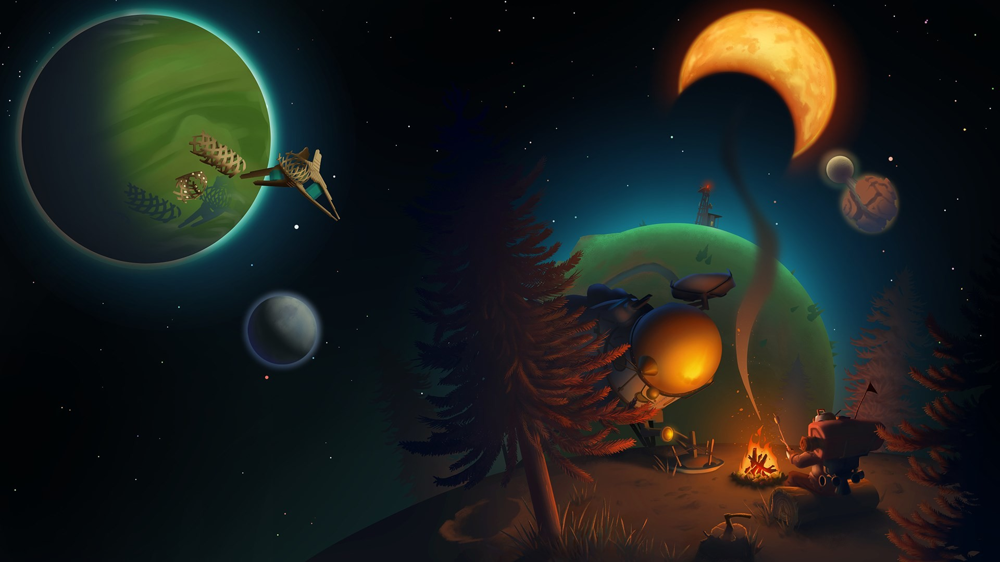
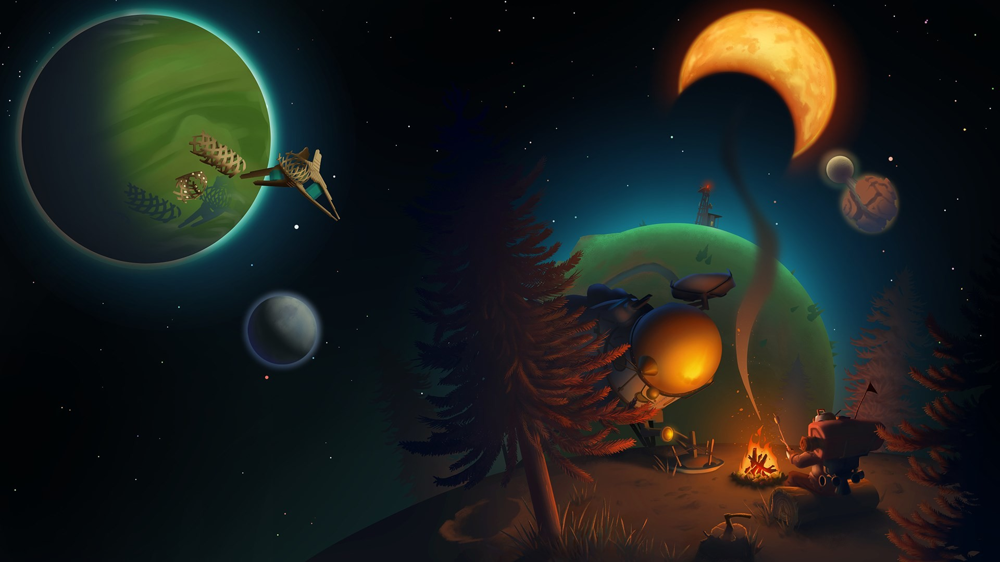
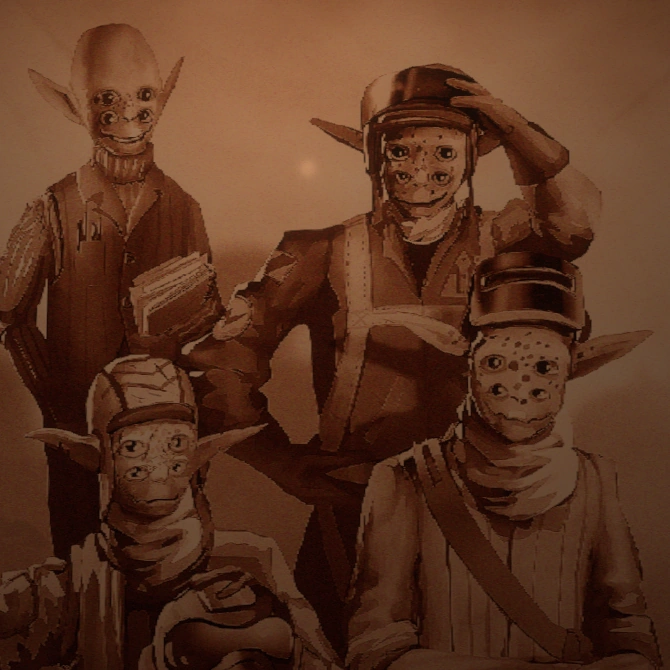
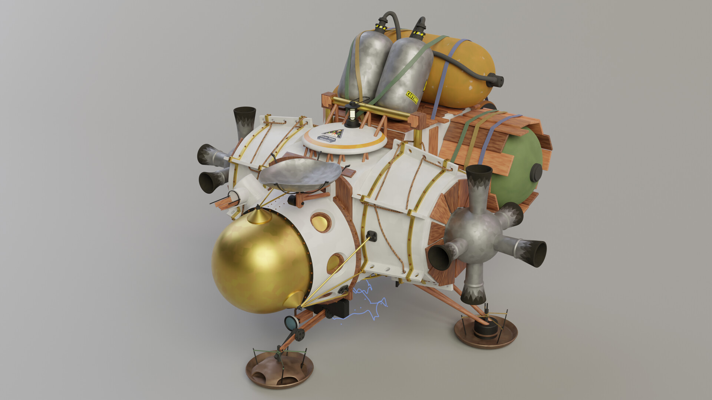
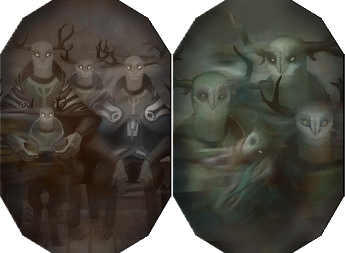

DESVENDANDO OS MISTÉRIOS DO COSMOS
DESVENDANDO OS MISTÉRIOS DO COSMOS
A proposta de Outer Wilds é ser um jogo de exploração onde você é jogado em um sistema solar inteiro para explorar em busca de respostas sobre uma civilização antiga.
voltar ao topoA base do jogo é que uma antiga civilização veio para o sistema solar que o nosso personagem vive em busca de um sinal de algo chamado olho.
A partir disso, nosso personagem vira um astronauta para explorar o sistema solar, mas temos apenas 21 minutos, já que o sol desse sistema está prestes a se tornar uma Supernova.
De alguma forma, o personagem volta e explora tudo novamente.
Uma das principais coisas que me fazem amar esse jogo é como ele não te guia sobre o que fazer. Ele só te joga em um mundo inteiro para explorar
e descobrir sobre o passado. Nada nele é dito que tem um caminho pré-definido. O desconhecido é uma sensação mágica, não saber o que fazer é frustrante e incrível ao mesmo tempo. É difícil explicar em palavras o que é esse jogo.
A gameplay não é algo tão inovador, não existe combate ou interação com outros players. É apenas você em um vasto universo.
voltar ao topoHearthian (raça do protagonista)
 Nomai


???
